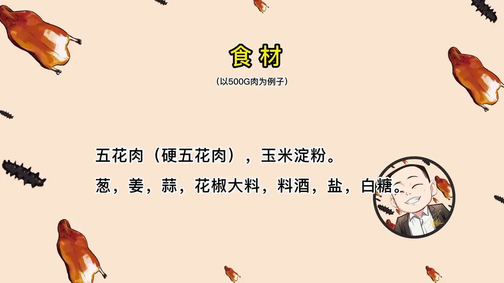
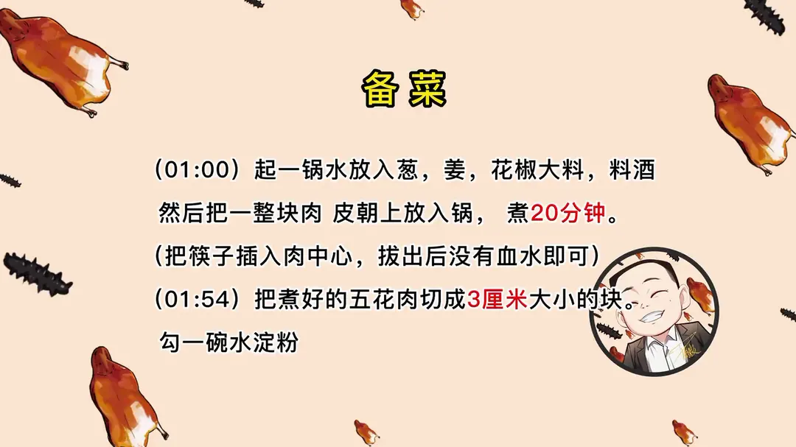
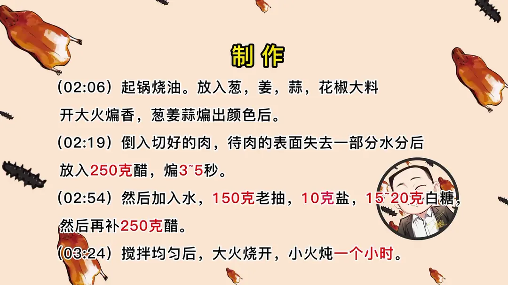
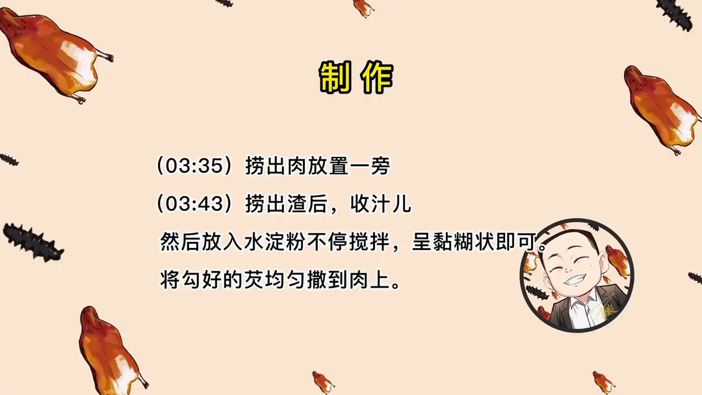

老醋焖肉
隋卞一做。硬五花整块煮透再切块，前后两次共烹 500g 醋，小火焖一小时，收成黏糊芡汁浇在肉上。
原视频：https://www.bilibili.com/video/BV1CW4y1L7ez
食材
五花肉、葱、姜 等 15 样
| 类别 | 用料 | 用量 |
|---|---|---|
| 主料 | 五花肉（硬五花肉） | 500g |
| 煮肉 | 葱 | 适量 |
| 煮肉 | 姜 | 适量 |
| 煮肉 | 花椒大料 | 适量 |
| 煮肉 | 料酒 | 适量 |
| 炒制 | 葱 | 适量 |
| 炒制 | 姜 | 适量 |
| 炒制 | 蒜 | 适量 |
| 炒制 | 花椒大料 | 适量 |
| 调味 | 醋 | 500g（250g 烹入 + 250g 后补） |
| 调味 | 老抽 | 150g |
| 调味 | 盐 | 10g |
| 调味 | 白糖 | 15~20g |
| 调味 | 水 | 适量 |
| 勾芡 | 玉米淀粉（水淀粉） | 1 碗 |
步骤
- 煮肉：起一锅水放入葱、姜、花椒大料、料酒，然后把一整块肉皮朝上放入锅，煮 20 分钟（把筷子插入肉中心，拔出后没有血水即可）。
- 切块：把煮好的五花肉切成 3 厘米大小的块，另勾一碗水淀粉备用。
- 煸香：起锅烧油，放入葱、姜、蒜、花椒大料，开大火煸香，把葱姜蒜煸出颜色。
- 烹醋：倒入切好的肉，待肉的表面失去一部分水分后放入 250g 醋，煸 3~5 秒。
- 调味：然后加入水、150g 老抽、10g 盐、15~20g 白糖，然后再补 250g 醋。
- 焖制：搅拌均匀后，大火烧开，小火炖一个小时。
- 收汁：捞出肉放置一旁，捞出渣后收汁儿，然后放入水淀粉不停搅拌，呈黏糊状即可。
- 浇汁：将勾好的芡均匀撒到肉上。
讲解要点
难度：★★★☆☆（步骤不多，难点是醋的两次下法和小火慢焖的时间）
为什么这么做
- 选硬五花，先整块煮再切块：硬五花四面都是五花，软五花切完一炖就歪七扭八，切不出方块；整块煮透再切，每块才方正。
- 煮肉时肉皮朝上：锅底最热，肉皮贴锅容易扒底糊住，皮朝上让它悬在汤里。
- 筷子插中心、不流血水就捞：中心最难熟，边上早就熟了，看中间才准。
- 醋分两次下：第一次 250g 趁肉块表面失水时烹入，酸香冲进肉里；第二次 250g 在加汤调味后补，酸味被稀释，只留醋香。
- 葱姜蒜要煸到变色：葱姜煸出颜色香味才出来，接着下肉，表面煸掉一部分水分，后面才吃得进汤汁。
- 不炒糖色，靠 150g 老抽上色：醋多、糖少，这道菜的底色就是老抽给的，放少了整锅颜色偏黄。
- 小火焖一小时、最后收浓勾芡：醋和糖经过一小时闷煮才和脂肪结合，酸味变柔和；收浓的汁挂在肉上，醋香才留得住。
容易翻车
- 醋只下一次、或者下得太晚，酸味冲、醋香不够。
- 老抽放得不够，成品颜色发浅，看着没有食欲。
- 大火焖煮，醋挥发太快、醋香跑掉。
- 收汁不够浓、水淀粉太少，浇上去汁往下流，挂不住肉。
热评补充
- 有网友专程去晋阳饭庄吃过这道菜，认为店里的醋外面很难买到，同样做法在家很难完全复刻那个醋香；有条件的话，可以换成山西陈醋试验一下。
原片尾卡




原片文案
AI 字幕校准稿
你们还记得晋阳饭庄吗？对，醋香味很浓，肉炖得非常软烂，酸口回口有点甜，这个醋很香很香。醋酸和醋香把唯一的那点腻也给中和掉了，这个脂肪又让那个醋显得没有那么酸，很好吃啊。这个菜有点贵吧——这搁我那卖 58。好，今天就带你们做，让你们 20 块钱都花不了。
这很简单，只有一块煮的五花肉，还有点葱姜、花椒、大料，这是煮肉用的，这个就是要煮的那块肉。不用记，片后面都有一个很详细的配料表。
焖肉要选硬五花，就这种四面都是五花的；那种软肉切完之后一炖就是歪七扭八的，什么样都有。为了块的整齐，我们先给它煮一下：葱姜、花椒大料，加入料酒，是去腥用的，然后把肉皮朝上放下边儿。煮的时候锅底比较热，很容易肉皮扒在锅上面，所以我们要把肉皮放在上面。大火烧开，改小火加盖，让它一直煮着就行了。
20 多分钟了，我们看看行不行。拿筷子一插，拔出来以后没有血水就可以了。插的时候注意，尽可能在中间插，中间不容易成熟，边上好熟。放到案板上给它修一下，修的这步不是必须的，是为了出锅以后更好看，你们自己在家吃不修也可以。修完之后改刀切成方块，改成六块，咱们今儿就做这么多了。
起锅烧油，葱姜蒜、花椒大料，大火给它煸香，葱姜蒜煸得变了颜色，它才会出香味。变颜色了，然后把肉倒进去，让它表面失去一部分水分，它会重新吸收汤汁的味道。关小火，小心变糊，直接烹醋了。已经有醋香味儿了。
严格说，他们应该用山西的那种时间特别长的老陈醋，我们为了方便大家做，就用普通的陈醋，味道会有差别，但是相差没有那么大。加入水，搁醋了之后煸它三秒五秒就行了。
先加色儿，这老抽可放不少，因为我没炒糖色，这肉就得直接靠老抽了。加盐、白糖，大火烧开，小火炖，大概炖一个小时。
炖成这样就可以了。你先把肉给它捞出来，捞下渣子，换个锅勾芡，水淀粉，勾到黏糊的就可以了。用这些汁往肉上一浇，这就是大饭店卖的那个。
这个醋很香，但它不刺鼻，然后跟那个脂肪结合得也特别好。虽然是肥肉——咱们选的是挺肥的肉，但吃起来完全不腻。醋可以促进肉的融化，而且把那个脂肪会容易分解一部分，所以就觉得没有那么腻口了。我的水平还没有经验那么多，但这个醋香味也特别特别的香。这我们缺点就是什么呀——味道近似，但是醋香味还是达不到晋阳饭庄那个标准，不过吃着已经有 90% 的香味了。
觉得这个菜能省多少钱？我刚才那块肉就是 400 多克，也就 20 块钱，调料其实不值什么钱，也就是醋值钱，手艺值钱。